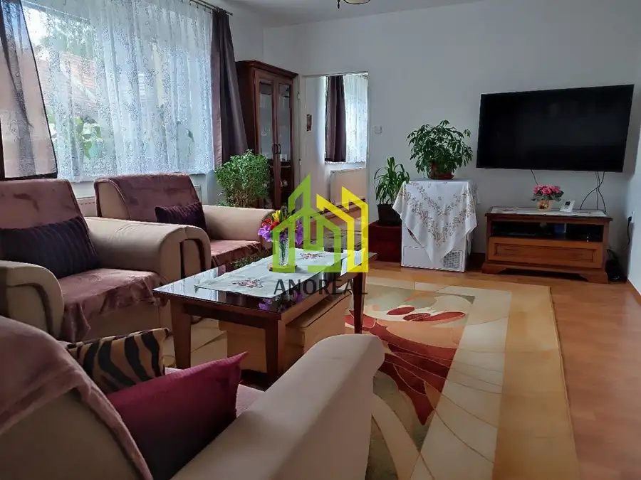
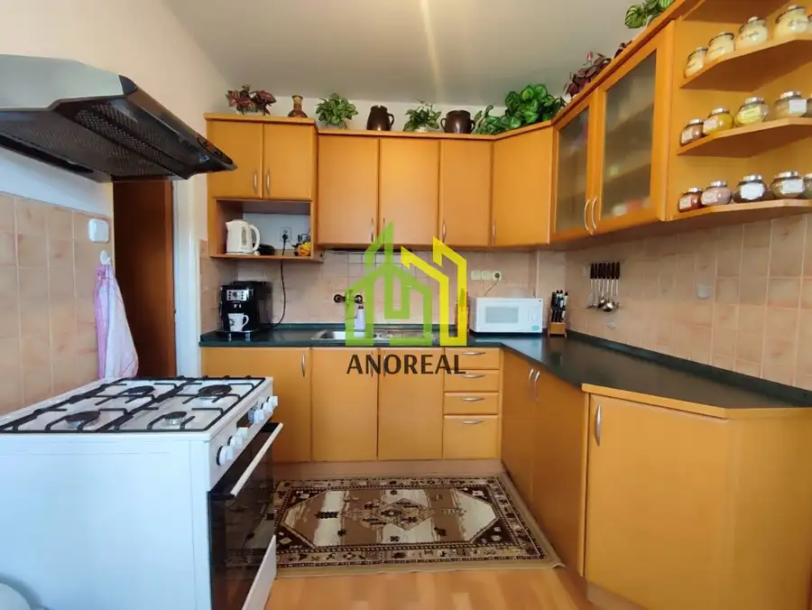
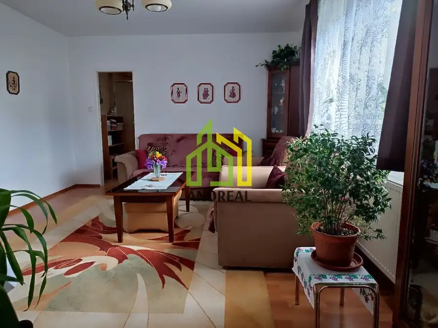
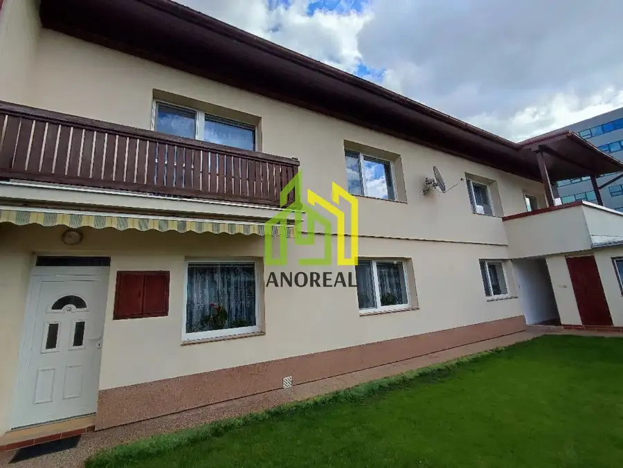
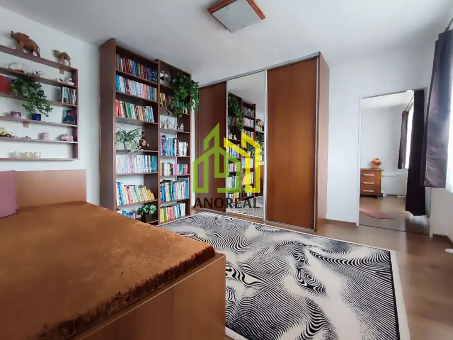
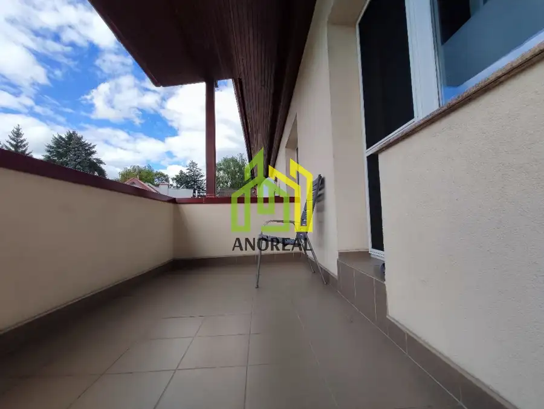
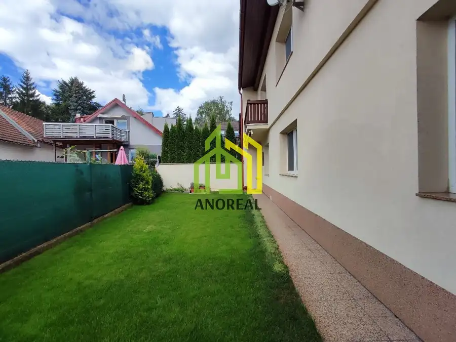
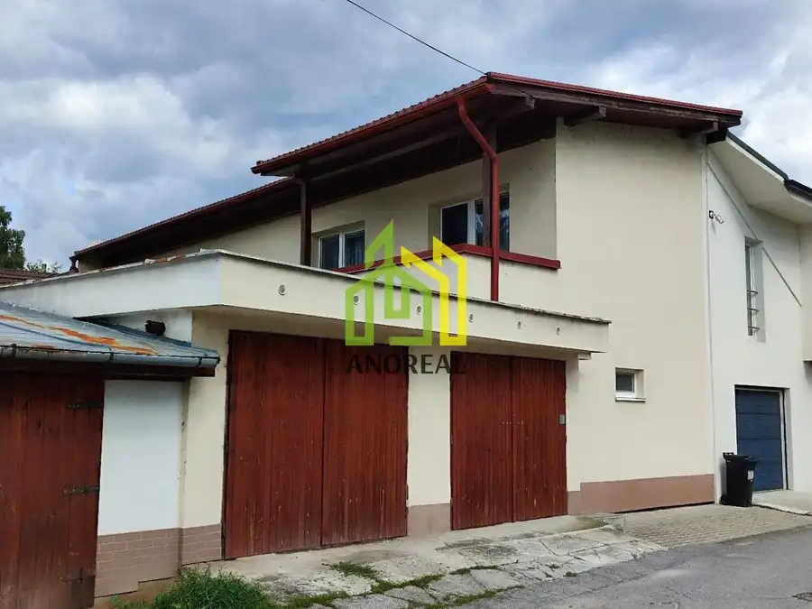
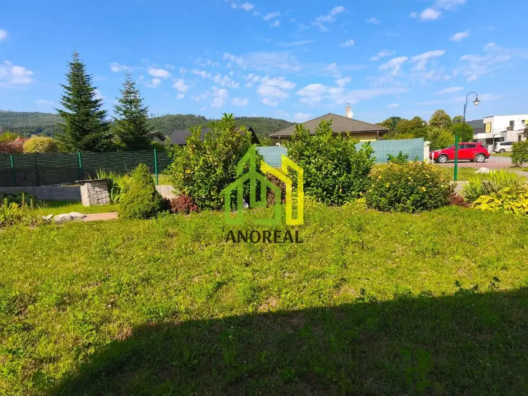
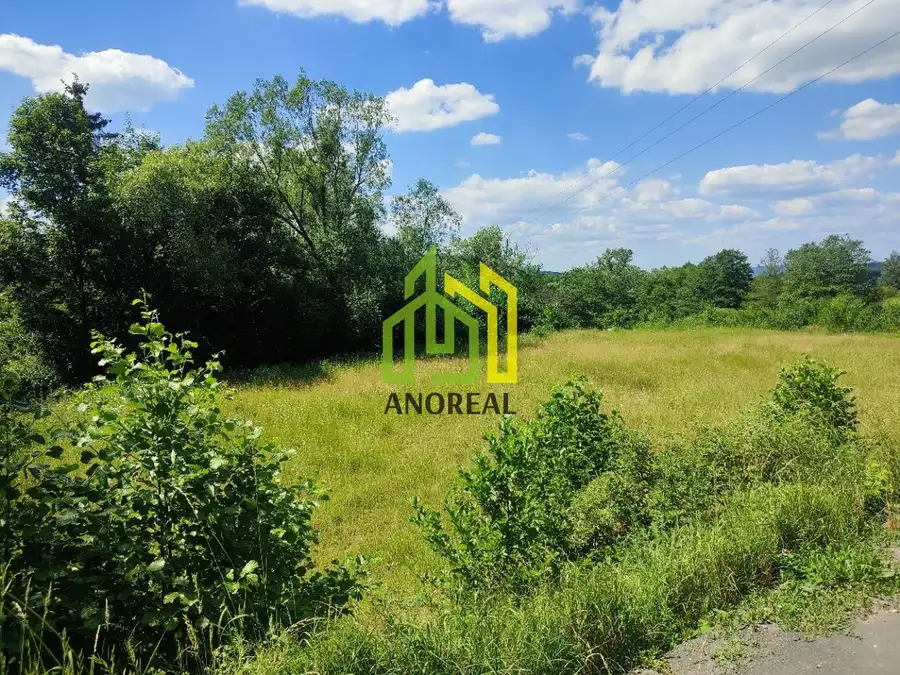

EXKLUZÍVNE: Rodinný dom v top lokalite Žilina – Závodie
Žilina







- Plocha190 m²
- StavKompletná rekonštrukcia
- VlastníctvoOsobné
O nehnuteľnosti
AnoReal: Ponúkame na predaj priestranný 5-izbový rodinný dom v obľúbenej časti Žilina – Závodie. Dom je dvojpodlažný, zateplený, orientovaný na slnečnú južnú stranu a pripravený na okamžité bývanie. 5 izieb – dostatok priestoru pre celú rodinu balkón aj terasa pre váš oddych garáž + pivnica + vlastná studňa rekonštrukcia (okná, podlahy, kotol, elektrina) nízke mesačné náklady cca 110 € kompletné inžinierske sietePozemok o výmere 170 m² ponúka jednoduchú údržbu a zároveň priestor na relax. Výborná lokalita s kompletnou občianskou vybavenosťou – škola, škôlka, obchody aj rýchla dostupnosť do centra. Ideálne bývanie pre rodinu alebo skvelá investícia na podnikanie! Viac info v RK.Kontakt: 0905 147 011, ivana.prazenicova@anoreal.sk
Parametre
- Druh
- Rodinný dom
- Druh domu
- Klasický dom
- Dátum zverejnenia
- 26. 04. 2025
- Energetický certifikát budovy
- nie je
- Orientácia
- Južná
- Plocha pozemku
- 170 m²
- Podpivničenie
- Čiastočné
- Počet izieb / miestností
- 5
- Počet kúpeľní
- 2
- Počet nadzemných podlaží
- 2
- Počet podzemných podlaží
- 1
- Prístupová komunikácia
- Asfaltová
- Rok výstavby
- 1981
- Stav nehnuteľnosti
- Kompletná rekonštrukcia
- Terás
- 1
- Terén pozemku
- Rovinatý
- Typ
- Predaj
- Typ konštrukcie
- Tehlová
- Vlastníctvo
- Osobné
- Vybavenie
- Terasa, Garáž, Verejné parkovanie, Šatníkové skrine, Pivnica
- Vykurovanie
- Ústredné
- Zastavaná plocha
- 95 m²
- Úžitková plocha
- 190 m²
Kde to je


Mohlo by Vás zaujímať

Komerčné priestoryNové 339 900 €EXKLUZÍVNE: Rodinný dom vhodný na podnikanie – Žilina, Závodie Žilina 190 m²
PozemokNové 141 100 €Na predaj stavebný pozemok s prístreškom a skleníkom, Svederník -Lipová alej, 475 m2 Svederník 475 m²
PozemokNové 19 500 €Exkluzívne na predaj rekreačný pozemok, Turie, 426 m2 Turie 426 m²